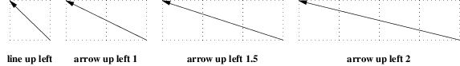
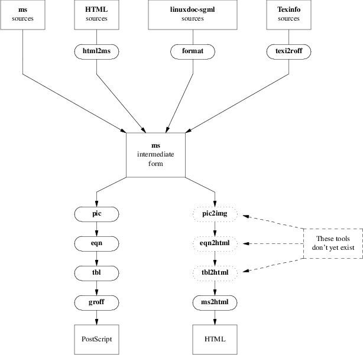
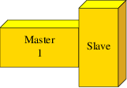

Here are a few larger examples, with complete source code. One of our earlier examples is generated in an instructive way using a for loop:
.PS
# Draw a demonstration up left arrow with grid box overlay
define gridarrow
{
move right 0.1
[
{arrow up left $1;}
box wid 0.5 ht 0.5 dotted with .nw at last arrow .end;
for i = 2 to ($1 / 0.5) do
{
box wid 0.5 ht 0.5 dotted with .sw at last box .se;
}
move down from last arrow .center;
[
if ( $1 == boxht ) \
then { "\fBline up left\fP" } \
else { sprintf("\fBarrow up left %g\fP", $1) };
]
]
move right 0.1 from last [] .e;
}
gridarrow(0.5);
gridarrow(1);
gridarrow(1.5);
gridarrow(2);
undef gridarrow
.PE

Figure 20-1: Diagonal arrows (dotted boxes show the implied 0.5-inch grid)
Here’s an example concocted to demonstrate layout of a large, multiple-part pattern:
.PS
define filter {box ht 0.25 rad 0.125}
lineht = 0.25;
Top: [
right;
box "\fBms\fR" "sources";
move;
box "\fBHTML\fR" "sources";
move;
box "\fBlinuxdoc-sgml\fP" "sources" wid 1.5;
move;
box "\fBTexinfo\fP" "sources";
line down from 1st box .s lineht;
A: line down;
line down from 2nd box .s; filter "\fBhtml2ms\fP";
B: line down;
line down from 3rd box .s; filter "\fBformat\fP";
C: line down;
line down from 4th box .s; filter "\fBtexi2roff\fP";
D: line down;
]
move down 1 from last [] .s;
Anchor: box wid 1 ht 0.75 "\fBms\fR" "intermediate" "form";
arrow from Top.A.end to Anchor.nw;
arrow from Top.B.end to 1/3 of the way between Anchor.nw and Anchor.ne;
arrow from Top.C.end to 2/3 of the way between Anchor.nw and Anchor.ne;
arrow from Top.D.end to Anchor.ne
{
# PostScript column
move to Anchor .sw;
line down left then down ->;
filter "\fBpic\fP";
arrow;
filter "\fBeqn\fP";
arrow;
filter "\fBtbl\fP";
arrow;
filter "\fBgroff\fP";
arrow;
box "PostScript";
# HTML column
move to Anchor .se;
line down right then down ->;
A: filter dotted "\fBpic2img\fP";
arrow;
B: filter dotted "\fBeqn2html\fP";
arrow;
C: filter dotted "\fBtbl2html\fP";
arrow;
filter "\fBms2html\fP";
arrow;
box "HTML";
# Nonexistence caption
box dashed wid 1 at B + (2,0) "These tools" "don’t yet exist";
line chop 0 chop 0.1 dashed from last box .nw to A.e ->;
line chop 0 chop 0.1 dashed from last box .w to B.e ->;
line chop 0 chop 0.1 dashed from last box .sw to C.e ->;
}
.PE

Figure 20-2: Hypothetical production flow for dual-mode publishing

Figure 20-3: Three-dimensional Boxes
Here the source code for figure 20-3:
.PS
# a three-dimensional block
#
# tblock(<width>, <height>, <text>)
define tblock { [
box ht $2 wid $1 \
color "gold" outlined "black" \
xslanted 0 yslanted 0 \
$3;
box ht .1 wid $1 \
color "yellow" outlined "black" \
xslanted .1 yslanted 0 \
with .sw at last box .nw;
box ht $2 wid .1 \
color "goldenrod" outlined "black" \
xslanted 0 yslanted .1 \
with .nw at 2nd last box .ne;
] }
tblock(1, .5, "Master" "1");
move -.1
tblock(.5, 1, "Slave");
.PE